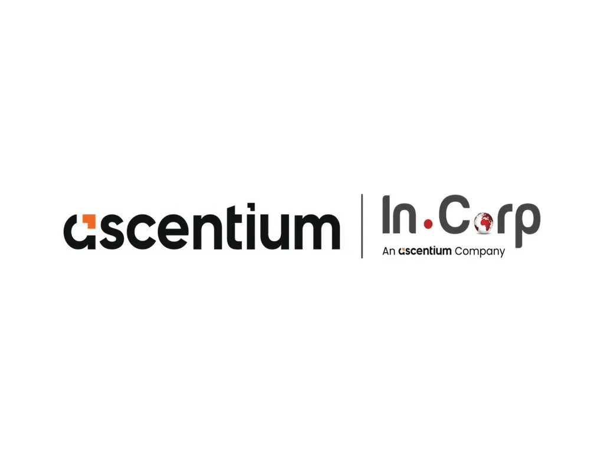

Business Management Trainee
Incorp Advisory Services Private Limited (Tech Transformation Team)
1 April 2026 - 19 June 2026 · 2.5 mos
India · Internship
Evaluated emerging technologies, identified automation opportunities, and supported the selection of technology partners aligned with organizational objectives across four major workstreams:
- Identifying AI-driven business process automation opportunities
- Evaluating Know Your Customer (KYC) and electronic signature (eSign) solution providers
- Assessing Optical Character Recognition (OCR) and identity verification APIs
- Evaluating Microsoft Copilot training partners for organization-wide AI adoption
Tech Transformation
AI Automation
KYC & eSign Evaluation
OCR & Identity APIs
Microsoft Copilot